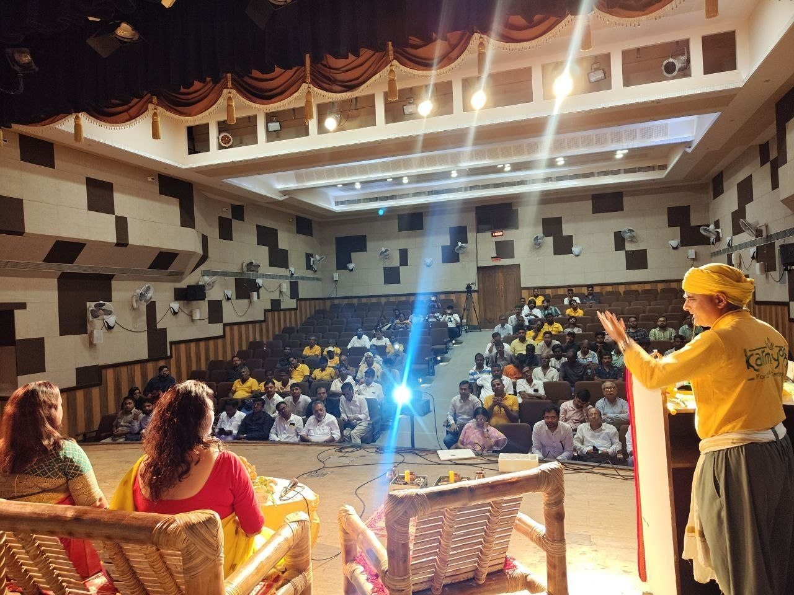
14 September 2026
A Media Connect at Rabindra Okakura Bhawan. Krishi Ratna League Bengal begins.
Issued in English and Bangla from Bharatiya Krishak Samaj West Bengal and KarmYog. The card is an artefact of the morning. Body copy of this essay names only those who were in the hall.
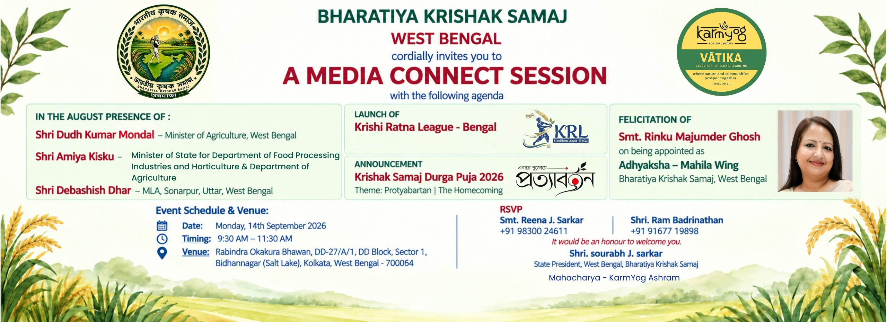
The order as issued. Photographs below carry the live room.
Bamboo, diya, tulsi, a yellow cloth on the lectern. The hall at Okakura before the first greeting.

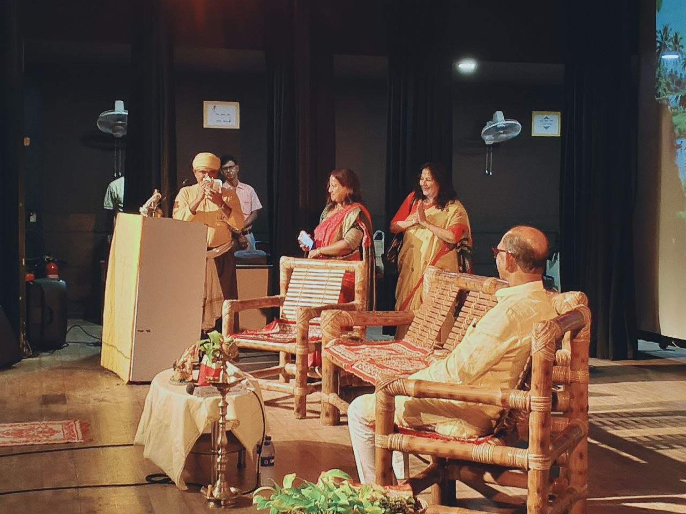
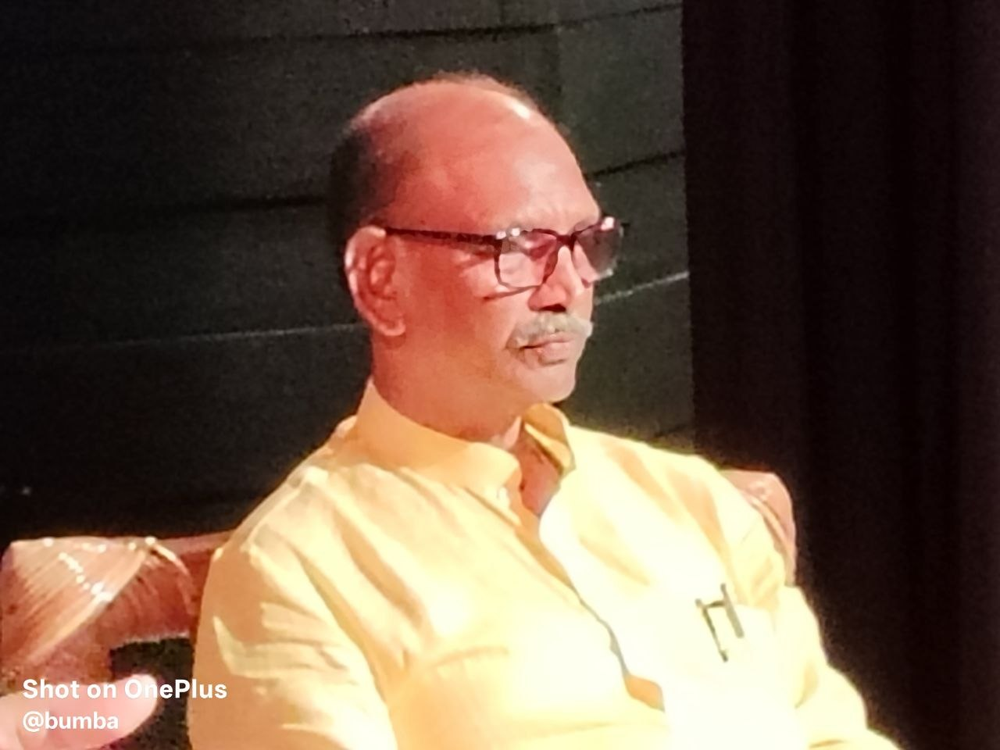

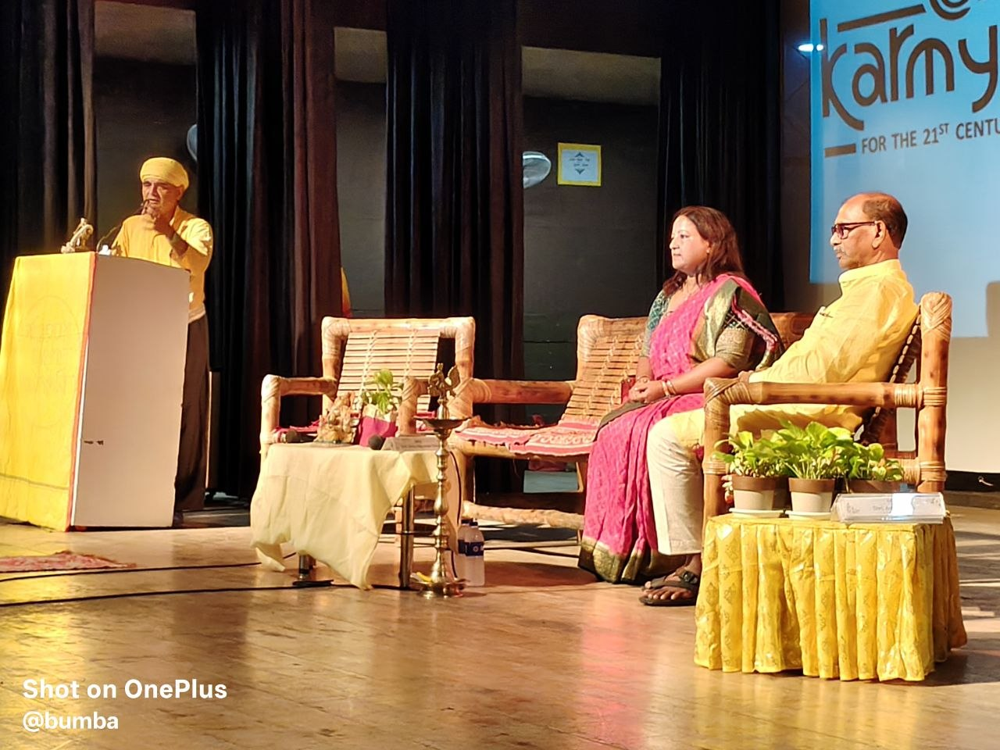
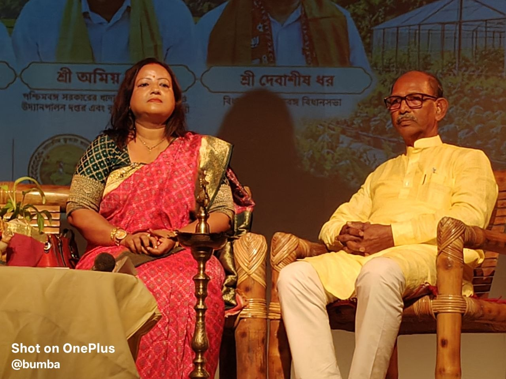
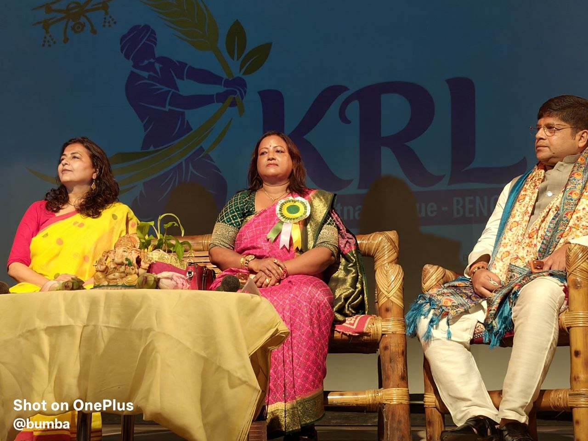
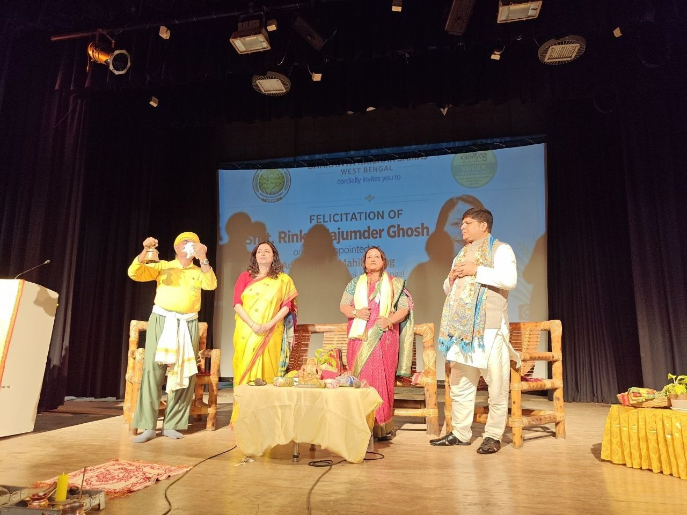
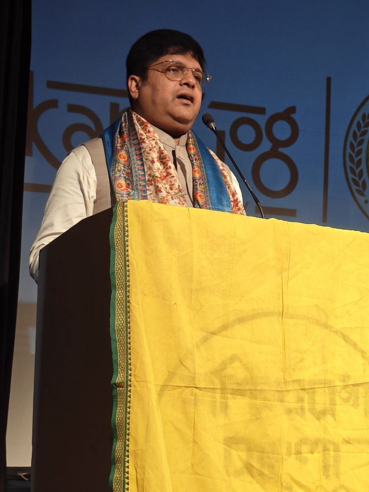
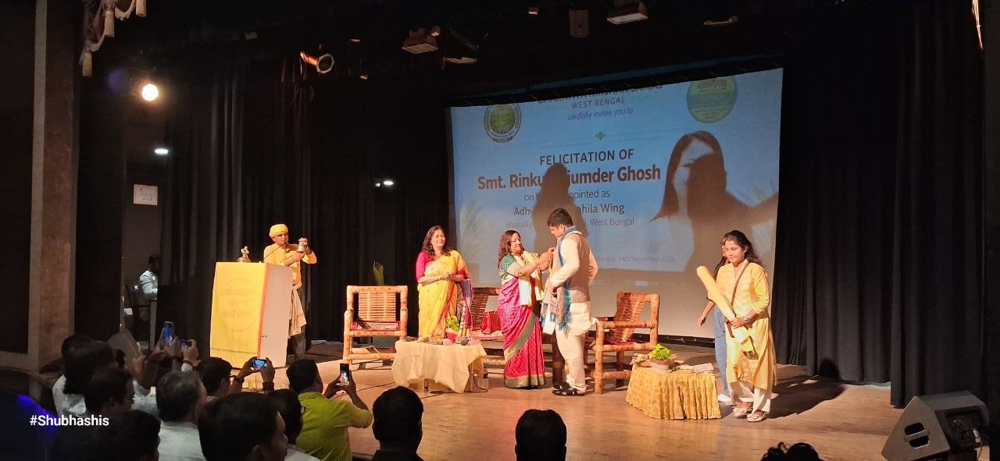

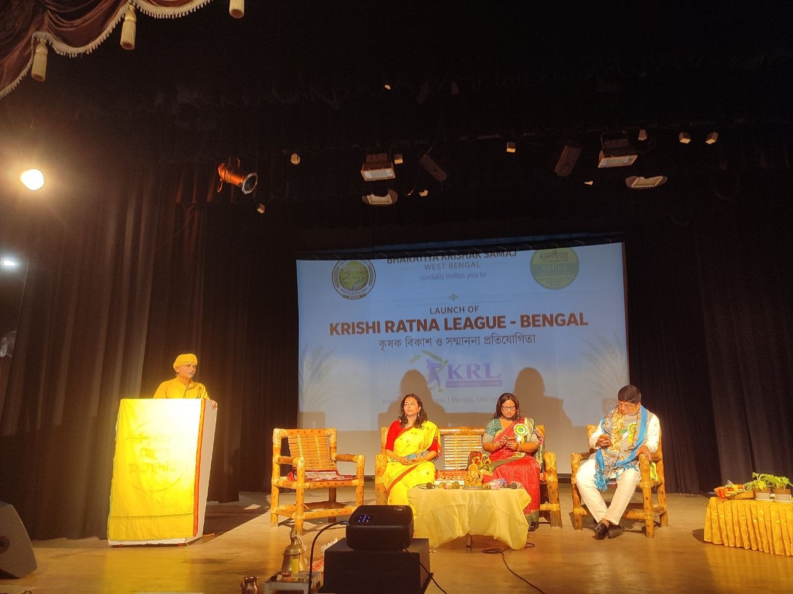
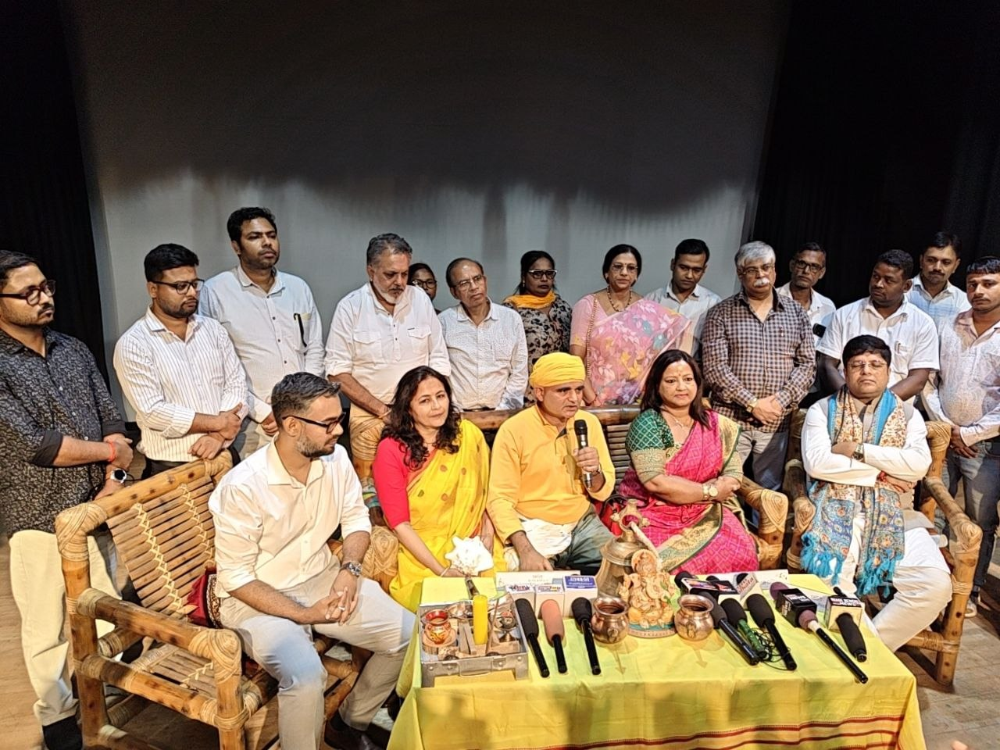
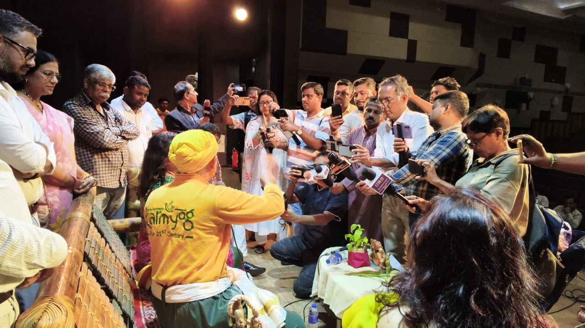
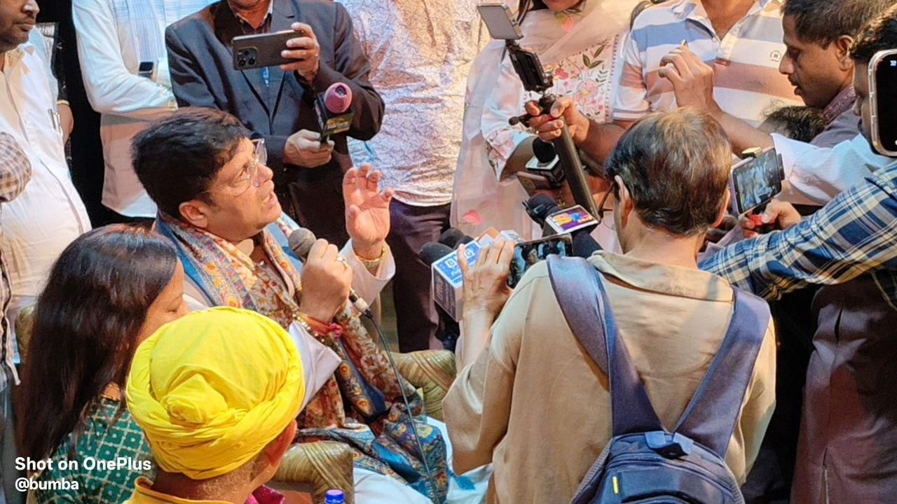
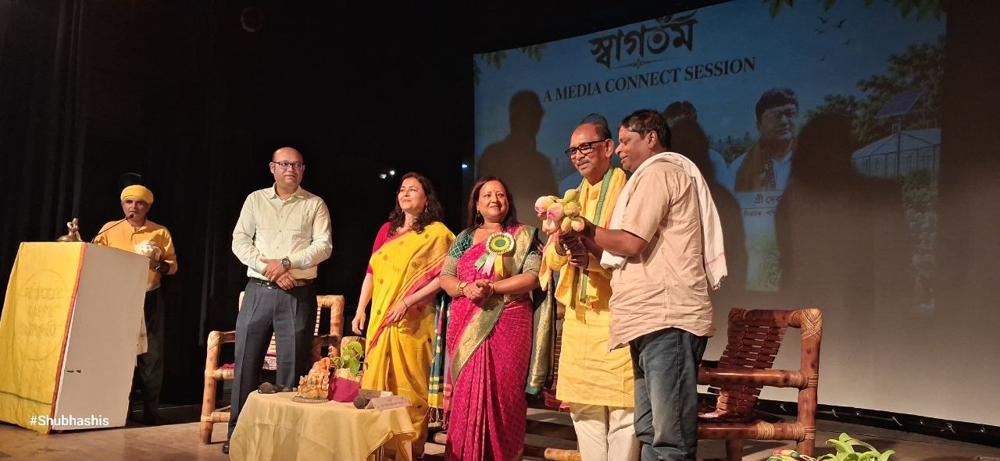